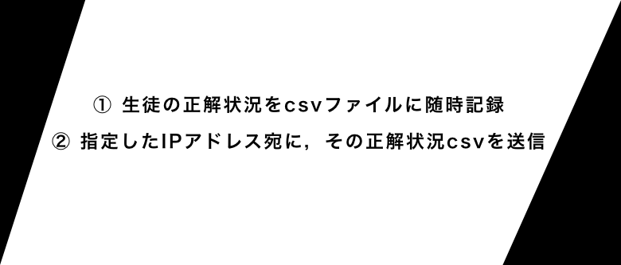

Visual
Visual

Purpose
これを作ろうと思った頃，Pythonにめちゃくちゃハマっており (特にその簡単さ，ライブラリの豊富さ，それらの使いやすさ) 自身のスキル確認のためにPythonで何か作ろうと試みました．
私は，予備校のスタッフとして働いているのですが，予備校の中に何か電子化したら楽なものはないか，と考えた結果，「英単語テスト」が浮かんだのです．
その予備校にある英単語テストは大きく分けて２種類存在します．
一つは，その予備校が制作した英単語テスト．アプリもあります．
もう一つは，それぞれの生徒が高校で使う英単語帳に対応した英単語テスト
後者は，完全に電子化されているわけではありませんでした．生徒がスタッフに「○○英単語帳の100から200(出題範囲)でお願いします」と申請し，Excelに打ち込まれたデータベースをExcelマクロで抽出，シャッフルし，A4のテストとして印刷する．
シンプルな構成のシステムで，英単語力を測る際はこれをよく用いています．しかし，これには以下の欠点がありました．
- 紙媒体特有の煩わしさ
- 採点の面倒さ
- 採点結果は教師と同期確認しなければならない
順を追って掘り下げてみましょう．
- 紙媒体特有の煩わしさ
英単語をみて，対応する日本語を空欄に「書く」．これが私には凄まじく煩わしいと感じていました．そもそも，スタッフに申請しないと発行できないのもおかしいと思っていましたし，生徒がやりたい時にやれないのはどうかなと思ったのです．
- 採点の面倒さ
紙に書いた答案を，模範回答と照らし合わせ採点．なんて面倒なんでしょうか．もちろん，それが悪いことだけではないですが．
- 採点結果は教師と同期確認しなければならない
教師サイドの人間が，生徒のテスト結果を知りたい時，その生徒はその紙に残った結果を教師の目の前に直接届けなければならない．これが，同期確認です．紙媒体でも非同期にする方法はありますが (ポストに投函する など) なんともスマートじゃない印象を受けます．
これらの問題を解決し，尚且つ今までなかった機能も追加する．そういう方針で，制作を開始しました．
- 紙媒体特有の煩わしさ
- 採点の面倒さ
- 採点結果は教師と同期確認しなければならない
Using
- Python tkinter
- Sketch
プログラミング部門，Python．GUIはtkinterという備えつけのライブラリで構成しました．
UIパーツ，その他見た目部門がSketch．今回は，Sketchでgifアニメーションを作り，それを盛り込んでいます．
Main Flow
図は，左から「ホーム画面」「テスト設定」「テスト中画面」「結果」を表す画面の様子です．
「テスト設定」で自分が持っている英単語帳のデータベースを呼び出し，出題範囲やモードを指定．それを実際にテストし結果を確認．といった流れです．
英単語帳のデータベースは，元々Excelデータがあったので，csv形式にし，それを読み込むシンプルな形を取りました．
これらのgifアニメはSketchを用いて作られました．画面から画面へ映る時のアニメーションです．(実際のコマの早さはもっと早いです．) Pythonは，gifアニメを再生する機能がデフォルトでないため，gifアニメを指定のfpsで回すプログラムを作成しました．
満点だとちょっと特殊演出になります．
こうして，「採点自動化」「テストの電子化」に成功しました．結果として，テストにかかる時間は大幅に減りました．
Reminder
機能の一つとして，リマインド機能を導入しました．これは，「過去にその単語を何回正解しているかがわかる」というものです． 昇順にして，よく正解する単語を調べたり，降順にして，まだ正解したことのない単語を知ったりするのに使えます．
上図は，昇順にした時の画面です．ちなみに，弱点補強機能として，降順で並べた際に単語数を指定することで，正解したことのない/正解数の少ない単語を使ったテストに行くこともできます．
Other Function
